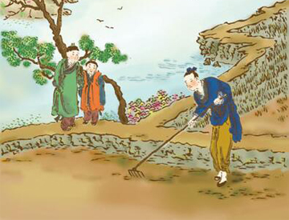

许武教弟

汉朝时候，有个姓许名武的，他父亲是早已死了，剩下两个弟弟，一个叫许晏，一个叫许普的，年纪都还很小。许武每每在耕田的时候，叫他两个弟弟立在旁边看着，晚上许武自己教他两个弟弟读书。如若弟弟不听他的教训，他就自己去跪在家庙里告罪。 后来许武举了孝廉，但是他因为两个弟弟都还没有名望，就把家产分做了三份，自己取了最肥美的田地，和广大的房屋，所有坏的统统给了弟弟。所以当时社会上的人，都称许他的两个弟弟，反而看轻许武了。 等到两个弟弟都得了选举，他就会合了宗族和亲戚们，哭着说明当时要给他弟弟显扬名声的缘故，并且把所有的家产，都让给了两个弟弟。